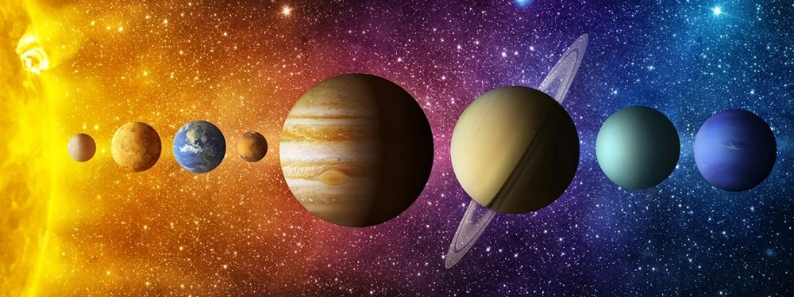

Sistema Solar
Uma viagem pela nossa vizinhança cósmica. Conheça os planetas, descubra curiosidades e entenda um pouco melhor o lugar incrível onde vivemos.
Um pequeno ponto no universo
O Sistema Solar é formado pelo Sol e por todos os corpos celestes que estão ligados à sua gravidade. Entre eles estão os oito planetas, planetas anões, luas, asteroides, cometas e outros objetos.
O Sol concentra a maior parte da massa do sistema e sua gravidade mantém os planetas em suas órbitas. Tudo isso está dentro da Via-Láctea, uma entre bilhões de galáxias do universo observável.
Conheça os planetas
Curiosidade, exploração e descoberta
Quer descobrir fatos interessantes sobre os planetas? Acesse nossa área de curiosidades. Também é possível conhecer Plutão, o Sol e a Lua e navegar pela galeria.
Coloque os fones e viaje
O projeto original também tinha uma trilha sonora para acompanhar a navegação. Mantivemos a ideia, agora com uma apresentação mais limpa.
Veja o Sistema Solar
